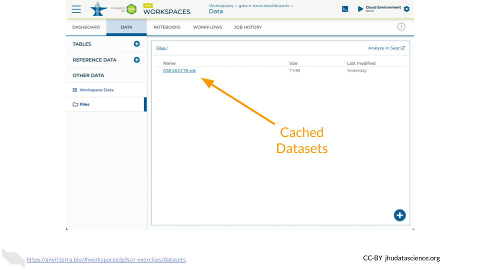
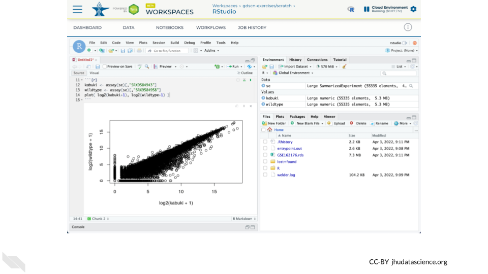
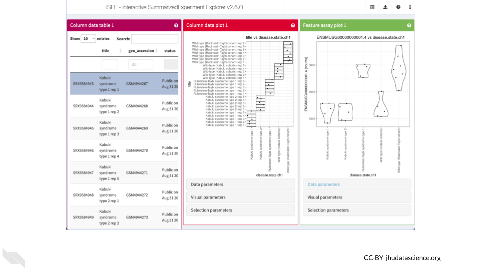

Chapter 4 Data Exploration
4.1 About the Data
Mendelian disorders of the epigenetic machinery (MDEMs) are a relatively new group of multiple congenital anomaly and intellectual disability syndromes. These disorders result from mutations in genes responsible for epigenetic machinery. In other words, genes responsible for controlling the epigenome lose their normal function.
Despite having different causative genes, these disorders share similarities in disease presentation. This physical similarity, or phenotypic convergence, could be due to these mutations causing similar effects at the epigenomic level. Such epigenetic changes then lead to similarities gene expression.
Scientists at Johns Hopkins designed an experiment to identify abnormalities shared across multiple MDEMs, in order to causally relate epigenetic variation to disease phenotypes. As part of this experiment, scientists examined gene expression (RNA-Seq) states from mouse models of three MDEMs (Kabuki types 1&2 and Rubinstein-Taybi syndromes).
You can find out more about this experiment here.

4.2 Using GEOquery
The NCBI Gene Expression Omnibus (GEO) is an international public repository that archives and freely distributes microarray, next-generation sequencing, and other forms of high-throughput functional genomics data submitted by the research community. We will use the Bioconductor package GEOquery to load data from GEO.
Using GEOquery is convenient because it allows us to get the data programmatically without having to download anything manually. This ensures anyone following in our footsteps can follow what we did exactly.
First, install GEOquery and load the library using the following code. if you are asked to update packages, you can type ‘n’ for ‘no’.
# Install and load GEOquery
BiocManager::install("GEOquery")
library(GEOquery)4.3 GEOquery Record Types
GEO contains several different record types. The most straightforward is a ‘Sample’ record. A Sample record describes the conditions under which an individual Sample was handled, the manipulations it underwent, and the abundance measurement of each element derived from it. Each Sample record is assigned a unique and stable GEO accession number (GSMxxx). A Sample entity may be included in multiple ‘Series’.
a ‘Series’ record defines a set of related Samples considered to be part of a group. This record describes how the Samples are related and provides information about the experiment. Series records may also contain tables describing extracted data, summary conclusions, or analyses. Each Series record is assigned a unique and stable GEO accession number (GSExxx).
We need to locate the correct ‘Series’ number for this experiment.

4.4 Kabuki Dataset Metadata
We will use the getGEO() function to locate the experiment’s data using the Series record number.
# Indicate which Series to download
gse <- getGEO("GSE162176")The output from getGEO() on a Series record type is a list of objects called an ExpressionSet. In our case, there is only one ExpressionSet, so we can select the first item (the data) from the list using brackets.
# Select the first item in the list
exp_set <- gse[[1]]We can look at the ExpressionSet metadata using pData().
# Extract phenotypic data
pheno_data <- pData(exp_set)
names(pheno_data)## [1] "title" "geo_accession"
## [3] "status" "submission_date"
## [5] "last_update_date" "type"
## [7] "channel_count" "source_name_ch1"
## [9] "organism_ch1" "characteristics_ch1"
## [11] "characteristics_ch1.1" "characteristics_ch1.2"
## [13] "characteristics_ch1.3" "molecule_ch1"
## [15] "extract_protocol_ch1" "extract_protocol_ch1.1"
## [17] "taxid_ch1" "description"
## [19] "data_processing" "data_processing.1"
## [21] "data_processing.2" "platform_id"
## [23] "contact_name" "contact_email"
## [25] "contact_laboratory" "contact_department"
## [27] "contact_institute" "contact_address"
## [29] "contact_city" "contact_state"
## [31] "contact_zip/postal_code" "contact_country"
## [33] "data_row_count" "instrument_model"
## [35] "library_selection" "library_source"
## [37] "library_strategy" "relation"
## [39] "relation.1" "supplementary_file_1"
## [41] "age (approximate):ch1" "cell type:ch1"
## [43] "disease state:ch1" "strain:ch1"View the data to see which Samples are contained in this ExpressionSet.
# Explore the metadata
View(pheno_data)## title geo_accession status
## GSM4944267 Kabuki syndrome type 1 rep 1 GSM4944267 Public on Aug 31 2021
## GSM4944268 Kabuki syndrome type 1 rep 2 GSM4944268 Public on Aug 31 2021
## GSM4944269 Kabuki syndrome type 1 rep 3 GSM4944269 Public on Aug 31 2021
## GSM4944270 Kabuki syndrome type 1 rep 4 GSM4944270 Public on Aug 31 2021
## GSM4944271 Kabuki syndrome type 1 rep 5 GSM4944271 Public on Aug 31 2021
## submission_date last_update_date type
## GSM4944267 Nov 25 2020 Aug 31 2021 SRA
## GSM4944268 Nov 25 2020 Aug 31 2021 SRA
## GSM4944269 Nov 25 2020 Aug 31 2021 SRA
## GSM4944270 Nov 25 2020 Aug 31 2021 SRA
## GSM4944271 Nov 25 2020 Aug 31 2021 SRAThe GEO record provides information about each of the samples (aka “metadata”). You can use the table() function to tabulate how many samples there are for each of the three disease states (along with their corresponding wild type controls).
table( pheno_data$`disease state:ch1` )##
## Kabuki syndrome type 1 Kabuki syndrome type 2
## 5 5
## Rubinstein-Taybi syndrome type 1 Wild-type (Kabuki cohorts)
## 5 5
## Wild-type (Rubinstein-Taybi cohort)
## 7QUESTIONS:
- What was the cell type (
cell type:ch1) used in this experiment? - Which column contains information about the ages?
- Which age has the most samples?
4.5 Pull in counts
Retrieving GSE162176 using getGEO() currently does not obtain RNA-seq expression data. We have cached a SummarizedExperiment object in the GDSCN datasets Workspace. This object contains metadata, counts, and abundance information as produced by the nf-co.re/rnaseq/3.6 pipeline using the GENCODE M23 annotation.

The Bioconductor AnVIL package provides a gsutil_cp() function to streamline transfers between AnVIL Workspaces. Note that the syntax for accessing Google Cloud Storage resources is gs://BUCKET_NAME/OBJET_NAME, and that each AnVIL Workspace has an associated bucket. The following command transfers the GSE162176.rds file from the GDSCN datasets Workspace into your Workspace.
AnVIL::gsutil_cp( "gs://fc-8529d29f-ac62-4c10-9f01-14f4d7612ae0/GSE162176.rds", "." )Once you have obtained a copy of the .rds file, load it into your environment using the readRDS() function. Note that you will need to install the SummarizedExperiment package if you have not previously done so.
AnVIL::install( "SummarizedExperiment" )
se <- readRDS( "GSE162176.rds" )Confirm that you have successfully loaded the data by creating a scatterplot comparing a Kabuki sample and a Wild-type sample.
kabuki <- assay(se)[,"SRX9584943"]
wildtype <- assay(se)[,"SRX9584958"]
plot( log2(kabuki+1), log2(wildtype+1) )
QUESTIONS:
- Which SRX accession numbers correspond to Rubinstein-Taybi?
- Create a scatterplot comparing a Rubinstein-Taybi sample and a Wild-type sample
4.6 Explore in iSEE
The Bioconductor Interactive SummarizedExperiment Explorer (iSEE) provides an interactive Shiny-based graphical user interface for exploring data stored in SummarizedExperiment objects and it’s extensions such as SingleCellExperiment. One feature that we will use here is the ability to explore what experimental conditions are present in this dataset and how gene expression changes between conditions.

You can launch an interactive explorer simply by calling the iSEE() function with only a SummarizedExperiment object. However, you can also configure the explorer by passing additional parameters such as the types of panels that you wish to appear. Here we launch iSEE with panels allowing exploration of the sample metadata as a table, the sample metadata as a plot, and the gene expression data as a plot. Note that you will need to install the iSEE package if you have not previously done so.
AnVIL::install( "iSEE" )
library( "iSEE" )
iSEE( se, list( ColumnDataTable(), ColumnDataPlot(), FeatureAssayPlot() ) )QUESTIONS:
- In the “Column data plot” panel, create a plot with age on the y-axis and disease on the x-axis. Which disease states have the most age diversity? The least?
- In the “Feature assay plot” panel, create a plot with ENSMUSG00000000001.4 on the y-axis and disease on the x-axis. What conclusions can you make if you plot counts? Does it change if you plot abundance?
sessionInfo()## R version 4.1.3 (2022-03-10)
## Platform: x86_64-pc-linux-gnu (64-bit)
## Running under: Ubuntu 20.04.5 LTS
##
## Matrix products: default
## BLAS: /usr/lib/x86_64-linux-gnu/openblas-pthread/libblas.so.3
## LAPACK: /usr/lib/x86_64-linux-gnu/openblas-pthread/liblapack.so.3
##
## locale:
## [1] LC_CTYPE=en_US.UTF-8 LC_NUMERIC=C
## [3] LC_TIME=en_US.UTF-8 LC_COLLATE=en_US.UTF-8
## [5] LC_MONETARY=en_US.UTF-8 LC_MESSAGES=en_US.UTF-8
## [7] LC_PAPER=en_US.UTF-8 LC_NAME=C
## [9] LC_ADDRESS=C LC_TELEPHONE=C
## [11] LC_MEASUREMENT=en_US.UTF-8 LC_IDENTIFICATION=C
##
## attached base packages:
## [1] stats graphics grDevices utils datasets methods base
##
## other attached packages:
## [1] GEOquery_2.62.2 Biobase_2.54.0 BiocGenerics_0.40.0
##
## loaded via a namespace (and not attached):
## [1] bslib_0.3.1 compiler_4.1.3 pillar_1.7.0
## [4] BiocManager_1.30.16 jquerylib_0.1.4 highr_0.9
## [7] R.methodsS3_1.8.1 R.utils_2.12.2 tools_4.1.3
## [10] digest_0.6.29 jsonlite_1.8.0 evaluate_0.15
## [13] lifecycle_1.0.1 tibble_3.1.6 pkgconfig_2.0.3
## [16] png_0.1-7 rlang_1.0.2 DBI_1.1.2
## [19] cli_3.2.0 curl_4.3.2 yaml_2.3.5
## [22] xfun_0.26 fastmap_1.1.0 xml2_1.3.3
## [25] dplyr_1.0.8 stringr_1.4.0 httr_1.4.2
## [28] knitr_1.33 generics_0.1.2 fs_1.5.2
## [31] vctrs_0.4.1 sass_0.4.1 hms_1.1.1
## [34] tidyselect_1.1.2 data.table_1.14.2 glue_1.6.2
## [37] R6_2.5.1 fansi_1.0.3 ottrpal_1.0.1
## [40] rmarkdown_2.10 bookdown_0.24 limma_3.50.3
## [43] tidyr_1.2.0 purrr_0.3.4 readr_2.1.2
## [46] tzdb_0.3.0 magrittr_2.0.3 ellipsis_0.3.2
## [49] htmltools_0.5.2 assertthat_0.2.1 utf8_1.2.2
## [52] stringi_1.7.6 crayon_1.5.1 R.oo_1.24.0